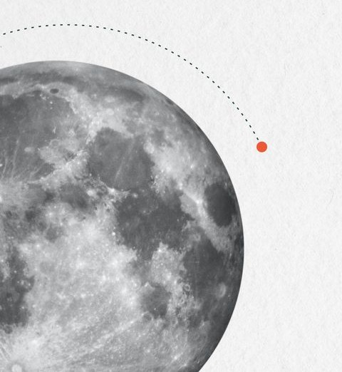

Hello, I am
A double-orbited moon. Sounds uncanny?
My affinity for the moon serves as a profound representation of my persona — a serene yet compelling presence in the world of design. The larger orbit symbolizes my primary passion for product design, representing my commitment to innovation and creativity, the core of my expertise. The smaller orbit shows my secondary interest in healthcare design — my curiosity and eagerness to explore diverse disciplines, integrating them into my approach to create impactful, meaningful solutions.
As part of my ongoing MRes in Healthcare & Design at the Royal College of Art, in collaboration with Imperial College London, I’ve engaged in research-driven, visual design work aimed at communicating complex healthcare experiences and design interventions.
experience
Latest thesis: Medium — Antenatal Wellness Toolkit, plus three quick research-driven studies in patient journey mapping, health data literacy, and dementia care.
Worked in a multidisciplinary team of two engineering students and a medical student to design VentriMon, a non-invasive ICP monitoring concept.